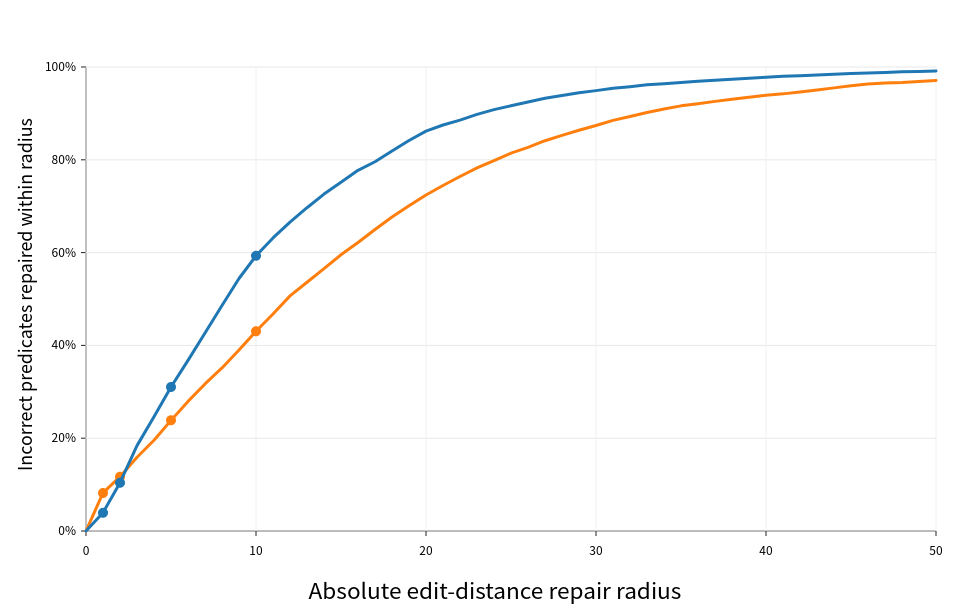

The soundness metatheory for typed flexible-arity slotted e-graphs is mechanized in Lean 4 (v4.33.0) with a restricted axiom profile and per-declaration hashes.
Abstract
Slotted e-graphs represent open terms modulo consistent renaming, while algebraic operators benefit from canonical sequence, bag, or set children. We compose the two at a specification level: typed slot-mapped invocations inhabit operator-declared ports whose sibling quotient and recursive flattening licenses are certified separately. A generic finite quotient presentation proves exactness of its least-orbit normal form, while certified records specify effective-support kernel extraction and collision. For abstract obligation traces carrying local endpoint certificates, we prove finite-unfolding equational soundness. An Alloy case study compares seven related pipeline arms on a frozen corpus and a controlled transformation suite.
Problem
Slotted e-graphs handle open terms modulo renaming, and flexible-arity operators handle associativity, commutativity and idempotency via sequence, bag or set children. No existing construction combines the two for algebraic containers holding typed invocations of open e-classes.
Approach
Operators declare typed ports built from One, Seq/Bag/Set with arity constraints, unary binders and binder blocks. Sibling quotients and recursive flattening are licensed by separate endpoint-indexed certificates. A quotient-first canonicalization is defined, and its exactness for any supplied finite quotient presentation is proved in Lean 4. Finite-unfolding equational soundness is also proved in Lean for abstract obligation traces, and a fixed nontrivial trace is checked by replay.
Results
The Lean development proves least-orbit normal-form exactness and trace soundness, and validates the extraction and collision records. On an Alloy predicate case study, the pipeline recognizes 4,088 AST-distinct correct pairs across 61,598 evaluated pairs with no observed incorrect zero-distance merges, and recovers all 5,500 capability cases.

Figure 3: Cumulative nearest-reference coverage for the n=42{,}386 non- CORRECT predicates. At inclusive radius r , blue is the Certificate-Integrated IR observation distance and orange is raw-AST tree-edit distance to the nearest AST-distinct oracle or CORRECT student predicate in the same invariant group. The horizontal axis is capped at 50 while all 42,386 predicates remain in the denominator.